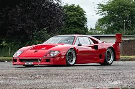

Ավտոմեքենաներ
ferrari f40

Ferrari F40-ը միջին շարժիչով, երկդռնանի, հետևի անիվներով սուպերքար է՝ Berlinetta-ի թափքի ոճով: Արտադրվել է Ferrari-ի կողմից 1987-ից 1992 թվականներին: Մեքենան հիմնված է GTO Evoluzione շասսիի վրա և հանդիսանում է Ferrari 288 GTO-ի մրցարշավային տարբերակի հետագա զարգացումը: Ընդհանուր առմամբ արտադրվել է այդ մեքենաներից 1315-ը։
Քաշը կազմում է 1100 կգ (2425 ֆունտ) և արտադրում է 478 ձիաուժ։ ձիաուժ (352 կՎտ) 7000 rpm-ում տպավորիչ կատարողականություն ուներ. ճանապարհային փորձարկումների ժամանակ մեքենան ցույց է տվել արագացում 0-100 կմ/ժ (62 մղոն/ժ) ավելի քիչ, քան 3,8 վայրկյանում (մինչդեռ ուղու միայն տարբերակը տևում է 3,2 վայրկյան), 0-160 կմ/ժ (0-97 կմ/ժ (0-97-մ/ժ) մղոն/ժ) 11 վայրկյանում։ Ferrari F40-ը մի փոքր արագացման առավելություն ուներ Porsche 959-ի նկատմամբ, որն այն ժամանակ իր գլխավոր մրցակիցն էր:
Հզորությունը մեծացել է; 2,9 լ (2,936 cc) GTO տարբերակը IHI V8 շարժիչի կրկնակի տուրբո լիցքավորմամբ է, որը զարգացնում է 478 ձիաուժ (352 կՎտ; 478 ձիաուժ) 110 կՊա (16 psi) հզորությամբ: F40-ը կատալիտիկ փոխարկիչ չուներ մինչև 1990 թվականը, երբ ԱՄՆ-ը ներկայացրեց բնապահպանական նոր կանոնակարգերը: Մեքենան ուներ երեք արտանետվող խողովակ, որոնցից երկուսը հանում էին արտանետումները բալոնների բլոկներից (լուսանկարում երկու արտաքին խողովակ), իսկ միջինը ծառայում էր տուրբո լիցքավորիչի փականի (Wastegate) միջոցով ավելորդ ճնշումը թոթափելու համար։
Կառուցվածքային առումով, մեքենայի կախոցը նման էր Ferrari GTO-ին կրկնակի ոսկորների վրա, թեև շատ մասեր արդիականացված էին, իսկ կախոցների պարամետրերը զգալիորեն տարբերվում էին: Մեքենան ուներ անսովոր ցածր մակերևույթ այն ժամանակվա ճանապարհային մեքենաների համար։ Այնուհետև Ferrari-ի ղեկավարությունն առաջարկել է անհրաժեշտության դեպքում ավելացնել մաքսազերծումը:
ferrari f430

Ferrari F430-ը Ferrari-ի սպորտային մեքենա է, որը ներկայացվել է 2004 թվականին Փարիզի ավտոսրահում և արտադրվել մինչև 2009 թվականը։ Վերջին սուպերմեքենան վաճառվել է 2009 թվականի ապրիլի 17-ին Մարանելոյի հատուկ աճուրդում, իսկ հասույթն ուղղվել է Աբրուցի շրջանի և նրա վարչական կենտրոն Լ'Աքվիլայի վերականգնմանը, որոնք ամենաշատը տուժել են Իտալիայում 2009 թվականի ապրիլի 6-ի գիշերը տեղի ունեցած երկրաշարժից: Վերջին F430-ը ստացել է երկու գույնի թափքի ներկ՝ պատրաստված Աբրուցո շրջանի ավանդական գույներին համապատասխան, ինչպես նաև վկայական՝ ստորագրված իտալական ընկերության նախագահ Լուկա Կորդերո դի Մոնթեզեմոլոյի կողմից՝ շնորհակալություն հայտնելով մեքենայի գնման և, համապատասխանաբար, երկրաշարժից ավերված տարածքների վերականգնման համար:
F430-ն ունի արտադրական մեքենաների համար հարմարեցված ժամանակակից նորարարություններ, որոնցից մի քանիսը նախկինում բացառապես օգտագործվում էին Ֆորմուլա 1-ի մեքենաներում: Դրանք ներառում են էլեկտրոնային դիֆերենցիալ (E-Diff), որն ուղղորդում է շարժիչի ոլորող մոմենտը օպտիմալացնելու ձգողականությունը, և հարմար տեղակայված ղեկի վրա տեղադրված անջատիչը (Scuderia-ի վարորդների շրջանում հայտնի է որպես «Manettino»), որը թույլ է տալիս ուղղակիորեն կառավարել մեքենայի դինամիկայի կառավարման համակարգերը:
F430 անվանումը գալիս է մոդելի թեթև և կոմպակտ շարժիչից, որը տեղաշարժում է 4308 խորանարդ սանտիմետր: Այս էներգաբլոկի հզորությունը 490 ձիաուժ է, առավելագույն ոլորող մոմենտը՝ 465 Նմ։
Ferrari F430-ի բոլոր բաղադրիչները կատարելագործվել են՝ վարորդին սուպերմեքենա վարելու լավագույն փորձը ապահովելու համար: Ահա թե ինչու F430-ն ապահովում է ակնառու կատարում՝ 0-ից 100 կմ/ժ արագացում 4 վայրկյանում և առավելագույն արագությունը 315 կմ/ժ:
ferrari sf90 spider

Ferrari SF90 Spider-ն ընդունում է SF90 Stradale-ի պիոներական հատկանիշները և ավելացնում բաց երկնքի տակ վարելու հուզմունքը: Այս plug-in հիբրիդային կաբրիոլետը պարծենում է նույն 986 ձիաուժ հզորությամբ հիբրիդային շարժիչով, որը համատեղում է 4.0 լիտրանոց երկտուրբո V8-ը և երեք էլեկտրական շարժիչները, որոնք թույլ են տալիս արագացնել 0-ից մինչև 62 մղոն/ժ ընդամենը 2,5 վայրկյանում:
SF90 շարքը բաղկացած է Stradale և Spider կուպեներից, երկուսն էլ արտադրական մեքենաներ, որոնք կարող եք տեսնել և գնել այսօր: Կարող եք նաև ընտրել Assetto Fiorano փաթեթը, որը մրցարշավային ձևափոխման փաթեթ է SF90 Stradale-ի կամ Spider-ի համար: Այն օգտագործում է Multimatic մրցարշավային հարվածային կլանիչներ և թեթև ածխածնային մանրաթելային մասեր, որոնք ինտեգրված են դռների վահանակներին և ներքևի մասում: Assetto Fiorano-ն նաև օգտագործում է թեթև տիտանի արտանետման համակարգ և ածխածնային անիվներ: Այս միջոցները խնայում են 30 կգ (66 ֆունտ)՝ համեմատած ստանդարտ SF90 Stradale-ի հետ: Նրանց համար, ովքեր իսկապես լուրջ են վերաբերվում մրցարշավին, կան նաև Ferrari SF90 XX Stradale-ը և Spider-ը, որը կենտրոնացած է ուղու վրա՝ Ferrari-ի հատուկ և բացառիկ հաճախորդների համար: